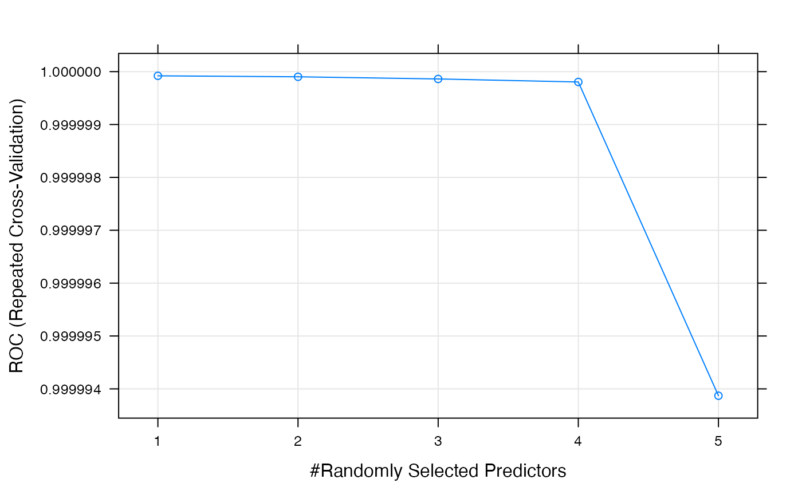
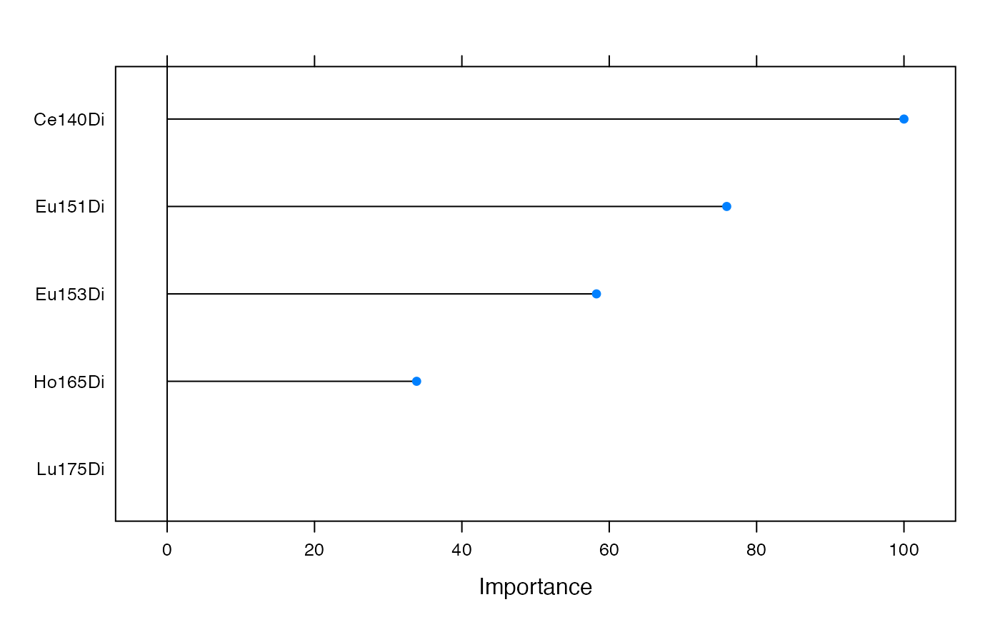
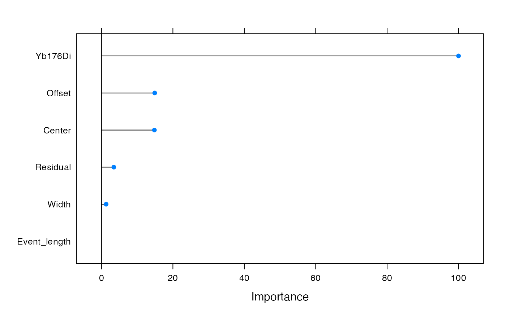

models_eval.RmdThe diagram below shows the strategy to build the training and test sets for the beads classification model. A total of 170 000 and 60 000 events (i.e. cells, rows) were used for training and test sets, respectively.
Beads training and test sets
As previously explained, we used the Beads_TrainTest function to obtain training and test data sets.
denoisingCTF::Beads_TrainTest(sample_size = 40, method = 'k_means',
bsample = 5000, class_col = 'BeadsSmp_ID', ...)We used the TrainModel function to train a Random Forest classification model:
denoisingCTF::TrainModel(train_set, test_set, alg = 'RF', class_col = 'BeadsSmp_ID',
seed = 40, name_0 = 'cells', name_1 = 'beads', label = 'beads',
allowParallel = T, free_cores = 2)To tune the training hyperparameters we used repeated 10-fold CV (x3). The metrics of the model are shown below:
## Random Forest
##
## No pre-processing
## Resampling: Cross-Validated (10 fold, repeated 3 times)
## Summary of sample sizes: 153000, 153000, 153000, 153000, 153000, 153000, ...
## Resampling results across tuning parameters:
##
## mtry ROC Sens Spec
## 1 0.9999999 0.9997725 0.9999059
## 2 0.9999999 0.9997529 0.9998706
## 3 0.9999999 0.9997529 0.9998627
## 4 0.9999998 0.9997608 0.9998471
## 5 0.9999939 0.9997725 0.9998235
##
## ROC was used to select the optimal model using the largest value.
## The final value used for the model was mtry = 1.
Feature importance plot:

Assessing model accuracy in test set:
## Confusion Matrix and Statistics
##
## Reference
## Prediction beads cells
## beads 29978 7
## cells 22 29993
##
## Accuracy : 0.9995
## 95% CI : (0.9993, 0.9997)
## No Information Rate : 0.5
## P-Value [Acc > NIR] : < 2e-16
##
## Kappa : 0.999
##
## Mcnemar's Test P-Value : 0.00933
##
## Sensitivity : 0.9993
## Specificity : 0.9998
## Pos Pred Value : 0.9998
## Neg Pred Value : 0.9993
## Precision : 0.9998
## Recall : 0.9993
## F1 : 0.9995
## Prevalence : 0.5000
## Detection Rate : 0.4996
## Detection Prevalence : 0.4998
## Balanced Accuracy : 0.9995
##
## 'Positive' Class : beads
## The diagram below shows the strategy to build the training and test sets for the debris classification model. A total of 220 000 and 80 000 events (i.e. cells, rows) were used for training and test sets, respectively.
Debris training and test sets
As previously explained, we used the pre_gate function to perform row indexing which is needed when comparing pre-gated and post-gated files (the latter are manually gated using user’s preferred platform (e.g. Cytobank, FlowJo)) to successfully label debris and obtain training and test data sets with the post_gate function.
# Removal of zeros, beads and addition of row ID column
denoisingCTF::pre_gate(sample_size=30, model_beads=model_beads, alg_bd = 'RF')
# Manually gate debris and dead cells using Gaussian Parameters and a live/dead cell marker.
# Comparison of pre-gated and post-gated files, noise labeling and training/testing data sets generation.
denoisingCTF::post_gate(bsample = 5000, path_pregated = '../') We used the TrainModel function to train a Random Forest classification model:
denoisingCTF::TrainModel(train_set, test_set, alg = 'RF', class_col = 'GP_Noise',
seed = 40, name_0 = 'cells', name_1 = 'debris', label = 'debris',
allowParallel = T, free_cores = 2)To tune the training hyperparameters we used repeated 10-fold CV (x3). The metrics of the model are shown below:
## Random Forest
##
## No pre-processing
## Resampling: Cross-Validated (10 fold, repeated 3 times)
## Summary of sample sizes: 198000, 198000, 198000, 198000, 198000, 198000, ...
## Resampling results across tuning parameters:
##
## mtry ROC Sens Spec
## 1 0.9915637 0.9661152 0.9450848
## 2 0.9938901 0.9598758 0.9559030
## 3 0.9939208 0.9595515 0.9560182
## 4 0.9938796 0.9591818 0.9557818
## 5 0.9937865 0.9589818 0.9556152
## 6 0.9935954 0.9585515 0.9552970
##
## ROC was used to select the optimal model using the largest value.
## The final value used for the model was mtry = 3.Feature importance plot:

Assessing model accuracy in test set:
## Confusion Matrix and Statistics
##
## Reference
## Prediction cells debris
## cells 37034 930
## debris 2966 39070
##
## Accuracy : 0.9513
## 95% CI : (0.9498, 0.9528)
## No Information Rate : 0.5
## P-Value [Acc > NIR] : < 2.2e-16
##
## Kappa : 0.9026
##
## Mcnemar's Test P-Value : < 2.2e-16
##
## Sensitivity : 0.9768
## Specificity : 0.9258
## Pos Pred Value : 0.9294
## Neg Pred Value : 0.9755
## Precision : 0.9294
## Recall : 0.9768
## F1 : 0.9525
## Prevalence : 0.5000
## Detection Rate : 0.4884
## Detection Prevalence : 0.5254
## Balanced Accuracy : 0.9513
##
## 'Positive' Class : debris
##